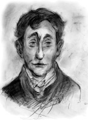

II. CİLT
JONATHAN STRANGE

“Bir büyücü büyüyle birini öldürebilir mi?” diye sordu Lord Wellington, Strange’e. Strange kaşlarını çattı. Bu soru hoşuna gitmemiş gibiydi. “Bir büyücü öldürebilir sanırım” diye itiraf etti. “Ama bir beyefendi asla öldüremez.”